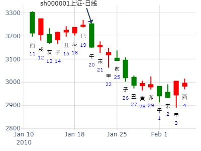
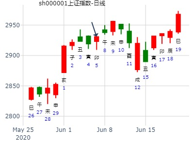

离之丰，兄弟入墓，化墓。何时得财？财爻逢冲之日得财。
卜筮正宗卦例。占何时得财？
巳月 戊寅日 （旬空：戌亥）
离：离为火(六冲) 坎：雷火丰
六神 【本 卦】 【变 卦】
朱雀 ▅▅▅▅▅ 兄弟巳火 世○→ ▅▅ ▅▅ 子孙戌土
青龙 ▅▅ ▅▅ 子孙未土 ▅▅ ▅▅ 妻财申金 世
玄武 ▅▅▅▅▅ 妻财酉金 ▅▅▅▅▅ 兄弟午火
白虎 ▅▅▅▅▅ 官鬼亥水 应 ▅▅▅▅▅ 官鬼亥水
螣蛇 ▅▅ ▅▅ 子孙丑土 ▅▅ ▅▅ 子孙丑土 应
勾陈 ▅▅▅▅▅ 父母卯木 ▅▅▅▅▅ 父母卯木
断曰：
酉金财爻安静，明天卯日必得。
彼曰： 兄弟动而持世，何以得财？
答曰： 兄弟化入戌墓，不能克他。
次日用静逢冲之日。汝不知耶，果验。
（备注：此处化空，入墓，以入墓为主象）
占事：1月20日涨跌
起卦方式：手工指定
公历时间：2010年1月20日9时4分
干支：己丑年 丁丑月 庚午日 辛巳时
旬空：午未 申酉 戌亥 申酉
离宫：离为火（六冲） 坎宫：雷火丰
六神 【本 卦】 【变 卦】
螣蛇 ▄▄▄▄▄ 兄弟己巳火 世O-> ▄▄ ▄▄ 子孙庚戌土
勾陈 ▄▄ ▄▄ 子孙己未土 ▄▄ ▄▄ 妻财庚申金 世
朱雀 ▄▄▄▄▄ 妻财己酉金 ▄▄▄▄▄ 兄弟庚午火
青龙 ▄▄▄▄▄ 官鬼己亥水 应 ▄▄▄▄▄ 官鬼己亥水
玄武 ▄▄ ▄▄ 子孙己丑土 ▄▄ ▄▄ 子孙己丑土 应
白虎 ▄▄▄▄▄ 父母己卯木 ▄▄▄▄▄ 父母己卯木

占事：600820节后二周走势？阿晖在线
公历起卦时间：2015年2月17日14时21分 (在线摇卦)
干支：乙未年 戊寅月 甲子日 辛未时 （日空：戌亥）
离宫：离为火 (六冲) 坎宫：雷火丰
六神 伏神 本 卦 变 卦
玄武 兄弟己巳火 ▅▅▅▅▅ 世 ○→ 子孙庚戌土 ▅▅ ▅▅
白虎 子孙己未土 ▅▅ ▅▅ 妻财庚申金 ▅▅ ▅▅ 世
腾蛇 妻财己酉金 ▅▅▅▅▅ 兄弟庚午火 ▅▅▅▅▅
勾陈 官鬼己亥水 ▅▅▅▅▅ 应 官鬼己亥水 ▅▅▅▅▅
朱雀 子孙己丑土 ▅▅ ▅▅ 子孙己丑土 ▅▅ ▅▅ 应
青龙 父母己卯木 ▅▅▅▅▅ 父母己卯木 ▅▅▅▅▅
巳日兄弟值日，却是大涨。莫非应爻亥水被冲实暗动原因？
主帖标题: 沪深300今日走势
肉手拿三个铜钱摇卦
公历起卦时间：2020年3月12日8时5分 (手工指定)
干支：庚子年 己卯月 甲寅日 戊辰时 （日空：子丑）
神煞：驿马－申 桃花－卯 日禄－寅 贵人－丑，未
离宫：离为火 (六冲) 坎宫：雷火丰
六神 伏神 本 卦 变 卦
玄武 兄弟己巳火 ▅▅▅▅▅ 世 ○→ 子孙庚戌土 ▅▅ ▅▅
白虎 子孙己未土 ▅▅ ▅▅ 妻财庚申金 ▅▅ ▅▅ 世
螣蛇 妻财己酉金 ▅▅▅▅▅ 兄弟庚午火 ▅▅▅▅▅
勾陈 官鬼己亥水 ▅▅▅▅▅ 应 官鬼己亥水 ▅▅▅▅▅
朱雀 子孙己丑土 ▅▅ ▅▅ 子孙己丑土 ▅▅ ▅▅ 应
青龙 父母己卯木 ▅▅▅▅▅ 父母己卯木 ▅▅▅▅▅

上证大盘4月23-4月27日
起卦方式：手动摇卦 (周易世界 www.zhouyiworld.com)
公历时间：2012年4月20日22时49分
干 支：壬辰年 甲辰月 辛亥日 己亥时
旬 空：午未 寅卯 寅卯 辰巳
离宫：离为火（六冲） 坎宫：雷火丰
六神 【本 卦】 【变 卦】
螣蛇 ▄▄▄▄▄ 兄弟己巳火 世O-> ▄▄ ▄▄ 子孙庚戌土
勾陈 ▄▄ ▄▄ 子孙己未土 ▄▄ ▄▄ 妻财庚申金 世
朱雀 ▄▄▄▄▄ 妻财己酉金 ▄▄▄▄▄ 兄弟庚午火
青龙 ▄▄▄▄▄ 官鬼己亥水 应 ▄▄▄▄▄ 官鬼己亥水
玄武 ▄▄ ▄▄ 子孙己丑土 ▄▄ ▄▄ 子孙己丑土 应
白虎 ▄▄▄▄▄ 父母己卯木 ▄▄▄▄▄ 父母己卯木
上九：王用出征，有嘉折首，获其匪丑，无咎。
象曰：王用出征，以正邦也。
亥日冲爻大涨，辰月世爻兄弟太弱。
占事：开盘买入600036下周得财否？
时间: 2015-04-17
干支: 乙未年庚辰月癸亥日 (旬空: 子丑 )
离为火 雷火丰
六神 伏神 本 卦 变 卦
白虎 ▅▅▅▅▅ 兄弟巳火 世Ｏ→ ▅▅ ▅▅ 子孙戌土
腾蛇 ▅▅ ▅▅ 子孙未土 ▅▅ ▅▅ 妻财申金 世
勾陈 ▅▅▅▅▅ 妻财酉金 ▅▅▅▅▅ 兄弟午火
朱雀 ▅▅▅▅▅ 官鬼亥水 应 ▅▅▅▅▅ 官鬼亥水
青龙 ▅▅ ▅▅ 子孙丑土 ▅▅ ▅▅ 子孙丑土 应
玄武 ▅▅▅▅▅ 父母卯木 ▅▅▅▅▅ 父母卯木
点评：
辰月墓破无力。辰日能涨（动态戌空被冲实）或是辰月合可起酉？
寅日兄弟长生，跌。卯日冲财爻暗动，小涨。辰日冲实戌墓，小涨（辰又合起酉金）巳午日均是兄弟值日，跌。酉日财爻值日，涨。戌日冲高回落，破墓值日。有点力。
占事：上证辰月走势-乾隆币卦
时间: 2016-04-04 22时14分
干支: 丙申年壬辰月丙辰日己亥时 (旬空: 子丑 )
离为火 雷火丰
六神 伏神 本 卦 变 卦
青龙 ▅▅▅▅▅ 兄弟巳火 世Ｏ→ ▅▅ ▅▅ 子孙戌土
玄武 ▅▅ ▅▅ 子孙未土 ▅▅ ▅▅ 妻财申金 世
白虎 ▅▅▅▅▅ 妻财酉金 ▅▅▅▅▅ 兄弟午火
腾蛇 ▅▅▅▅▅ 官鬼亥水 应 ▅▅▅▅▅ 官鬼亥水
勾陈 ▅▅ ▅▅ 子孙丑土 ▅▅ ▅▅ 子孙丑土 应
朱雀 ▅▅▅▅▅ 父母卯木 ▅▅▅▅▅ 父母卯木
兄弟入月破之墓，关不住兄弟。
出生年：1982年 性别：女
占事: 明天这支股票能涨停吗?
起卦方式：手动摇卦
公历时间：2007年5月21日19时43分
干支：丁亥年 乙巳月 乙卯日 丙戌时
旬空：午未 寅卯 子丑 午未
神煞：驿马─巳 桃花─子 日禄─卯 贵人─子，申
离宫：离为火（六冲） 坎宫：雷火丰
六神 【本 卦】 【变 卦】
玄武 ▄▄▄▄▄ 兄弟己巳火 世O-> ▄▄ ▄▄ 子孙庚戌土
白虎 ▄▄ ▄▄ 子孙己未土 ▄▄ ▄▄ 妻财庚申金 世
螣蛇 ▄▄▄▄▄ 妻财己酉金 ▄▄▄▄▄ 兄弟庚午火
勾陈 ▄▄▄▄▄ 官鬼己亥水 应 ▄▄▄▄▄ 官鬼己亥水
朱雀 ▄▄ ▄▄ 子孙己丑土 ▄▄ ▄▄ 子孙己丑土 应
青龙 ▄▄▄▄▄ 父母己卯木 ▄▄▄▄▄ 父母己卯木
明天这支股票能涨停吗?过几天的走势如何?
占事：离之丰，兄化子，化墓，测下周大盘走势。
公历：2009年5月10日8时44分 星期日 北京时间
干支：己丑年 己巳月 乙卯日 庚辰时 旬空：午未 戌亥 子丑 申酉
离：离为火(六冲) 坎：雷火丰
玄武 ▅▅▅▅▅ 兄弟巳火 世○→ ▅▅ ▅▅ 子孙戌土
白虎 ▅▅ ▅▅ 子孙未土 ▅▅ ▅▅ 妻财申金 世
螣蛇 ▅▅▅▅▅ 妻财酉金 ▅▅▅▅▅ 兄弟午火
勾陈 ▅▅▅▅▅ 官鬼亥水 应 ▅▅▅▅▅ 官鬼亥水
朱雀 ▅▅ ▅▅ 子孙丑土 ▅▅ ▅▅ 子孙丑土 应
青龙 ▅▅▅▅▅ 父母卯木 ▅▅▅▅▅ 父母卯木
兄弟入墓，无所作为。周K线涨为主。
有志者查查当时的K线图，为何辰日大跌？
答曰：辰日冲墓，放出兄弟，故大跌。
离之丰，兄弟入墓，化墓。何时得财？财爻逢冲之日得财。
卜筮正宗卦例。占何时得财？
巳月 戊寅日 （旬空：戌亥）
离：离为火(六冲) 坎：雷火丰
六神 【本 卦】 【变 卦】
朱雀 ▅▅▅▅▅ 兄弟巳火 世○→ ▅▅ ▅▅ 子孙戌土
青龙 ▅▅ ▅▅ 子孙未土 ▅▅ ▅▅ 妻财申金 世
玄武 ▅▅▅▅▅ 妻财酉金 ▅▅▅▅▅ 兄弟午火
白虎 ▅▅▅▅▅ 官鬼亥水 应 ▅▅▅▅▅ 官鬼亥水
螣蛇 ▅▅ ▅▅ 子孙丑土 ▅▅ ▅▅ 子孙丑土 应
勾陈 ▅▅▅▅▅ 父母卯木 ▅▅▅▅▅ 父母卯木
上九:王用出征，有嘉折首，获匪其丑。无咎。
象曰：王用出征，以正邦也。
断曰：酉金财爻安静，明天卯日必得。
彼曰： 兄弟动而持世，何以得财？
答曰： 兄弟化入戌墓，不能克他。
次日用静逢冲之日。汝不知耶，果验。
（备注：此处化空，入墓，以入墓为主象）
主帖标题: 上证指数000001·5月18日—5月22日·周一至周五·奇门预测探讨
帮忙看..600188明天
干支：己丑年 己巳月 甲子日 癸酉时 （日空：戌亥）
神煞：驿马－寅 桃花－酉 日禄－寅 贵人－丑，未
离宫：离为火 (六冲) 坎宫：雷火丰
六神 伏神 本 卦 变 卦
玄武 兄弟己巳火 ▅▅▅▅▅ 世 ○→ 子孙庚戌土 ▅▅ ▅▅
白虎 子孙己未土 ▅▅ ▅▅ 妻财庚申金 ▅▅ ▅▅ 世
腾蛇 妻财己酉金 ▅▅▅▅▅ 兄弟庚午火 ▅▅▅▅▅
勾陈 官鬼己亥水 ▅▅▅▅▅ 应 官鬼己亥水 ▅▅▅▅▅
朱雀 子孙己丑土 ▅▅ ▅▅ 子孙己丑土 ▅▅ ▅▅ 应
青龙 父母己卯木 ▅▅▅▅▅ 父母己卯木 ▅▅▅▅▅
帮忙看..600188明天

占事：2014年5月26周一大盘走势
时间：2014年5月25日23点33分 星期日
干支：甲午年 己巳月 丁酉日 庚子时
神煞：华盖-丑 将星-酉 劫煞-寅 天医-辰 天禧-丑 桃花-午 谋星-未
禄神-午 羊刃-巳 文昌-酉 马星-亥 灾煞-卯 贵人-亥、酉
巳月 丁酉日（旬空：辰巳）
六神 离为火 离宫 雷火丰 坎宫
青龙 ■■■■■■兄弟巳火 世 ○→ 子孙戌土■■ ■■
玄武 ■■ ■■子孙未土 妻财申金■■ ■■
白虎 ■■■■■■妻财酉金 兄弟午火■■■■■■
腾蛇 ■■■■■■官鬼亥水 应 官鬼亥水■■■■■■
勾陈 ■■ ■■子孙丑土 子孙丑土■■ ■■
朱雀 ■■■■■■父母卯木 父母卯木■■■■■■
九戒 占事：0597 一个月
公历时间：2014年5月26日10时57分
干 支：甲午年 己巳月 丁酉日 乙巳时
旬 空：辰巳 戌亥 (辰巳) 寅卯
离宫：离为火（六冲） 坎宫：雷火丰
六神 【本 卦】 【变 卦】
青龙 ▄▄▄▄▄ 兄弟己巳火 世O-> ▄▄ ▄▄ 子孙庚戌土
玄武 ▄▄ ▄▄ 子孙己未土 ▄▄ ▄▄ 妻财庚申金 世
白虎 ▄▄▄▄▄ 妻财己酉金 ▄▄▄▄▄ 兄弟庚午火
螣蛇 ▄▄▄▄▄ 官鬼己亥水 应 ▄▄▄▄▄ 官鬼己亥水
勾陈 ▄▄ ▄▄ 子孙己丑土 ▄▄ ▄▄ 子孙己丑土 应
朱雀 ▄▄▄▄▄ 父母己卯木 ▄▄▄▄▄ 父母己卯木
上九：王用出征，有嘉折首，获其匪丑，无咎。
象曰：王用出征，以正邦也。
兄弟持世入墓，本是好事，所以前面涨。但是到了第二个亥日时（兄弟不空了，则被冲出墓，大显空头威风，而跌）
第一个亥日时兄弟仍空，只是冲实。尚未冲出。
3日巳爻出空，又出墓，大跌。
9日亥爻冲他出墓。跌。等到20日戌日开始，重新入墓，才开始止跌。
此处关键是世爻得月太旺。次日即被冲爻出墓。
野鹤曰：予于此书，务必屡试而屡验者，方敢教人以为法，非比他书，偶然凑合，即以为式。
余凡占得兄爻持世，而世值月破、旬空、化墓，及日月作财星冲世克世爻，或世爻兄弟变出财爻，皆许得财，屡占得验，始敢告之。若世持兄弟非此类者，不可如此断也。
---------以上为看涨论据。
主帖标题: 转发“个股卦例及反馈”（四）
年卦33400591
排卦：元亨利贞网六爻在线排盘系统 https://www.china95.net
公历起卦时间：2021年5月3日9时22分 (电脑自动)
干支：辛丑年 壬辰月 辛亥日 癸巳时 （日空：寅卯）
离宫：离为火 (六冲) 坎宫：雷火丰
六神 伏神 本 卦 变 卦
螣蛇 兄弟己巳火 ▅▅▅▅▅ 世 ○→ 子孙庚戌土 ▅▅ ▅▅
勾陈 子孙己未土 ▅▅ ▅▅ 妻财庚申金 ▅▅ ▅▅ 世
朱雀 妻财己酉金 ▅▅▅▅▅ 兄弟庚午火 ▅▅▅▅▅
青龙 官鬼己亥水 ▅▅▅▅▅ 应 官鬼己亥水 ▅▅▅▅▅
玄武 子孙己丑土 ▅▅ ▅▅ 子孙己丑土 ▅▅ ▅▅ 应
白虎 父母己卯木 ▅▅▅▅▅ 父母己卯木 ▅▅▅▅▅
主帖标题: 6月11-15日大盘涨跌卦
占事: 6月11-15日大盘涨跌？
起卦方式：手工指定 周易天地www.64gua.com六爻线上排盘系统
公历时间：2012年6月8日16时11分
干支：壬辰年 丙午月 庚子日 甲申时
旬空：午未 寅卯 辰巳 午未
神煞：驿马─寅 桃花─酉 日禄─申 贵人─丑，未
离宫：离为火（六冲） 坎宫：雷火丰
六神 【本 卦】 【变 卦】
螣蛇 ▄▄▄▄▄ 兄弟己巳火 世O-> ▄▄ ▄▄ 子孙庚戌土
勾陈 ▄▄ ▄▄ 子孙己未土 ▄▄ ▄▄ 妻财庚申金 世
朱雀 ▄▄▄▄▄ 妻财己酉金 ▄▄▄▄▄ 兄弟庚午火
青龙 ▄▄▄▄▄ 官鬼己亥水 应 ▄▄▄▄▄ 官鬼己亥水
玄武 ▄▄ ▄▄ 子孙己丑土 ▄▄ ▄▄ 子孙己丑土 应
白虎 ▄▄▄▄▄ 父母己卯木 ▄▄▄▄▄ 父母己卯木
主帖标题: ★★★★★上证6.22-6.26日走势？
第一卦 出生：2020 年 性别：男 占事：上证指数6月8--12日走势？？？
排卦：元亨利贞网六爻在线排盘系统 https://www.china95.net
公历起卦时间：2020年6月5日15时48分 (手工指定)
干支：庚子年 壬午月 己卯日 壬申时 （日空：申酉）
神煞：驿马－巳 桃花－子 日禄－午 贵人－子，申
离宫：离为火 (六冲) 坎宫：雷火丰
六神 伏神 本 卦 变 卦
勾陈 兄弟己巳火 ▅▅▅▅▅ 世 ○→ 子孙庚戌土 ▅▅ ▅▅
朱雀 子孙己未土 ▅▅ ▅▅ 妻财庚申金 ▅▅ ▅▅ 世
青龙 妻财己酉金 ▅▅▅▅▅ (日破) 兄弟庚午火 ▅▅▅▅▅
玄武 官鬼己亥水 ▅▅▅▅▅ 应 官鬼己亥水 ▅▅▅▅▅
白虎 子孙己丑土 ▅▅ ▅▅ 子孙己丑土 ▅▅ ▅▅ 应
螣蛇 父母己卯木 ▅▅▅▅▅ 父母己卯木 ▅▅▅▅▅

第二卦
姓名：姓名 出生年份：2020年 性别：男
占事:上证指数6月8--12日走势？？？ 起卦方式：手动摇卦 (周易世界
公历时间：2020年6月7日23时27分 农历时间：庚子年 闰 四月十七日子时
干 支：庚子年 壬午月 壬午日 庚子时
旬 空：辰巳 申酉 申酉 辰巳
离宫：天火同人（归魂） 离宫：离为火（六冲）
六神 【本 卦】 【变 卦】
白虎 ▄▄▄▄▄ 子孙壬戌土 应 ▄▄▄▄▄ 兄弟己巳火 世
螣蛇 ▄▄▄▄▄ 妻财壬申金 O-> ▄▄ ▄▄ 子孙己未土
勾陈 ▄▄▄▄▄ 兄弟壬午火 ▄▄▄▄▄ 妻财己酉金
朱雀 ▄▄▄▄▄ 官鬼己亥水 世 ▄▄▄▄▄ 官鬼己亥水 应
青龙 ▄▄ ▄▄ 子孙己丑土 ▄▄ ▄▄ 子孙己丑土
玄武 ▄▄▄▄▄ 父母己卯木 ▄▄▄▄▄ 父母己卯木

主帖标题: [股市大赛]每日个股，中国人寿10日
干支：戊子年 己未月 庚戌日 癸未时 （日空：寅卯）
神煞：驿马－申 桃花－卯 日禄－申 贵人－丑，未
离宫：离为火 (六冲) 坎宫：雷火丰
腾蛇 兄弟己巳火 ▅▅▅▅▅ 世 ○→ 子孙庚戌土 ▅▅ ▅▅
勾陈 子孙己未土 ▅▅ ▅▅ 妻财庚申金 ▅▅ ▅▅ 世
朱雀 妻财己酉金 ▅▅▅▅▅ 兄弟庚午火 ▅▅▅▅▅
青龙 官鬼己亥水 ▅▅▅▅▅ 应 官鬼己亥水 ▅▅▅▅▅
玄武 子孙己丑土 ▅▅ ▅▅ 子孙己丑土 ▅▅ ▅▅ 应
白虎 父母己卯木 ▅▅▅▅▅ 父母己卯木 ▅▅▅▅▅
兄动要怎样，不知是破，看涨。
主帖标题: 持有个股今年何时见顶？
性别：男 占事:rshbwldqa 7.15日走势如何？
起卦方式：手工指定 (周易世界 www.zhouyiworld.com)
公历时间：2020年7月15日9时0分
干 支：庚子年 癸未月 己未日 己巳时
旬 空：辰巳 申酉 子丑 戌亥
离宫：离为火（六冲） 坎宫：雷火丰
勾陈 ▄▄▄▄▄ 兄弟己巳火 世O-> ▄▄ ▄▄ 子孙庚戌土
朱雀 ▄▄ ▄▄ 子孙己未土 ▄▄ ▄▄ 妻财庚申金 世
青龙 ▄▄▄▄▄ 妻财己酉金 ▄▄▄▄▄ 兄弟庚午火
玄武 ▄▄▄▄▄ 官鬼己亥水 应 ▄▄▄▄▄ 官鬼己亥水
白虎 ▄▄ ▄▄ 子孙己丑土 ▄▄ ▄▄ 子孙己丑土 应
螣蛇 ▄▄▄▄▄ 父母己卯木 ▄▄▄▄▄ 父母己卯木
主帖标题: 7.04大盘？
2022年7月4日3时50分
干支：壬寅年 丙午月 戊午日 甲寅时 （日空：子丑）
神煞：驿马－申 桃花－卯 日禄－巳 贵人－丑，未
离宫：离为火 (六冲) 坎宫：雷火丰
六神 伏神 本 卦 变 卦
朱雀 兄弟巳火 ▅▅▅▅▅ 世 ○→ 子孙戌土 ▅▅ ▅▅
青龙 子孙未土 ▅▅ ▅▅ 妻财申金 ▅▅ ▅▅ 世
玄武 妻财酉金 ▅▅▅▅▅ 兄弟午火 ▅▅▅▅▅
白虎 官鬼亥水 ▅▅▅▅▅ 应 官鬼亥水 ▅▅▅▅▅
螣蛇 子孙丑土 ▅▅ ▅▅ 子孙丑土 ▅▅ ▅▅ 应
勾陈 父母卯木 ▅▅▅▅▅ 父母卯木 ▅▅▅▅▅

7.25-29创业板指数399006走势 姓名：入定观 起卦方式：手动摇卦
历时间：2022年7月24日8时7分
干 支：壬寅年 丁未月 戊寅日 丙辰时 旬空：申酉
离宫：离为火（六冲） 坎宫：雷火丰
六神
【本 卦】 【变 卦】
朱雀 ▄▄▄▄▄ 兄弟己巳火 世○ ▄▄ ▄▄ 子孙庚戌土
青龙 ▄▄ ▄▄ 子孙己未土 ▄▄ ▄▄ 妻财庚申金 世
玄武 ▄▄▄▄▄ 妻财己酉金 ▄▄▄▄▄ 兄弟庚午火
白虎 ▄▄▄▄▄ 官鬼己亥水 应 ▄▄▄▄▄ 官鬼己亥水
螣蛇 ▄▄ ▄▄ 子孙己丑土 ▄▄ ▄▄ 子孙己丑土 应
勾陈 ▄▄▄▄▄ 父母己卯木 ▄▄▄▄▄ 父母己卯木
未日，是否刑开墓？

占事：002009
起卦方式：手工指定 易经股市论坛 www.yijingstock.com 在线排盘系统
公历时间：2013年8月5日8时37分
干 支：癸巳年 己未月 癸卯日 丙辰时
旬 空：午未 子丑 (辰巳) 子丑
离宫：离为火（六冲） 坎宫：雷火丰
白虎 ▄▄▄▄▄ 兄弟己巳火 世O-> ▄▄ ▄▄ 子孙庚戌土
螣蛇 ▄▄ ▄▄ 子孙己未土 ▄▄ ▄▄ 妻财庚申金 世
勾陈 ▄▄▄▄▄ 妻财己酉金 ▄▄▄▄▄ 兄弟庚午火
朱雀 ▄▄▄▄▄ 官鬼己亥水 应 ▄▄▄▄▄ 官鬼己亥水
青龙 ▄▄ ▄▄ 子孙己丑土 ▄▄ ▄▄ 子孙己丑土 应
玄武 ▄▄▄▄▄ 父母己卯木 ▄▄▄▄▄ 父母己卯木
主帖标题: 002169 (8.14--23)
占事: 002169
起卦方式：手动摇卦
公历时间：2013年8月14日11时4分
干支：癸巳年 庚申月 壬子日 丙午时
旬空：午未 子丑 寅卯 寅卯
神煞：驿马─寅 桃花─酉 日禄─亥 贵人─巳，卯
离宫：离为火（六冲） 坎宫：雷火丰
六神 【本 卦】 【变 卦】
白虎 ▄▄▄▄▄ 兄弟己巳火 世O-> ▄▄ ▄▄ 子孙庚戌土
螣蛇 ▄▄ ▄▄ 子孙己未土 ▄▄ ▄▄ 妻财庚申金 世
勾陈 ▄▄▄▄▄ 妻财己酉金 ▄▄▄▄▄ 兄弟庚午火
朱雀 ▄▄▄▄▄ 官鬼己亥水 应 ▄▄▄▄▄ 官鬼己亥水
青龙 ▄▄ ▄▄ 子孙己丑土 ▄▄ ▄▄ 子孙己丑土 应
玄武 ▄▄▄▄▄ 父母己卯木 ▄▄▄▄▄ 父母己卯木
风生水起 占事：恒通股份未来 二周
公历时间：2015年8月2日12时7分
干 支：乙未年 癸未月 庚戌日 壬午时
旬 空：辰巳 申酉 (寅卯) 申酉
离宫：离为火（六冲） 坎宫：雷火丰
六神 【本 卦】 【变 卦】
螣蛇 ▄▄▄▄▄ 兄弟己巳火 世O-> ▄▄ ▄▄ 子孙庚戌土
勾陈 ▄▄ ▄▄ 子孙己未土 ▄▄ ▄▄ 妻财庚申金 世
朱雀 ▄▄▄▄▄ 妻财己酉金 ▄▄▄▄▄ 兄弟庚午火
青龙 ▄▄▄▄▄ 官鬼己亥水 应 ▄▄▄▄▄ 官鬼己亥水
玄武 ▄▄ ▄▄ 子孙己丑土 ▄▄ ▄▄ 子孙己丑土 应
白虎 ▄▄▄▄▄ 父母己卯木 ▄▄▄▄▄ 父母己卯木
兄弟入墓，本是上上卦，却是短线顶。
主帖标题: 2020年上证大盘指数走势与看点！
姓名：姓名 出生年份：2020年 性别：男 占事:甲申月8月7日一一9月6日上证大盘涨跌：以8月6日3386.46点为基点！
起卦方式：手动摇卦 (周易世界 www.zhouyiworld.com)
公历时间：2020年8月8日16时42分
干 支：庚子，甲申，壬午，已時
旬 空：辰巳 午未 申酉 子丑
神 煞：驿马─巳 桃花─子 日禄─子 贵人─巳，卯
离宫：离为火（六冲） 坎宫：雷火丰
六神 【本 卦】 【变 卦】
白虎 ▄▄▄▄▄ 兄弟己巳火 世O-> ▄▄ ▄▄ 子孙庚戌土
螣蛇 ▄▄ ▄▄ 子孙己未土 ▄▄ ▄▄ 妻财庚申金 世
勾陈 ▄▄▄▄▄ 妻财己酉金 ▄▄▄▄▄ 兄弟庚午火
朱雀 ▄▄▄▄▄ 官鬼己亥水 应 ▄▄▄▄▄ 官鬼己亥水
青龙 ▄▄ ▄▄ 子孙己丑土 ▄▄ ▄▄ 子孙己丑土 应
玄武 ▄▄▄▄▄ 父母己卯木 ▄▄▄▄▄ 父母己卯木
2022-08-14
ST曙光815周卦。离之丰。金玉堂
时间: 2022-08-14
干支: 壬寅年戊申月己亥日 (旬空: 辰巳 )
离为火 雷火丰
六神 伏神 本 卦 变 卦
勾陈 ▅▅▅▅▅ 兄弟巳火 世Ｏ→ ▅▅ ▅▅ 子孙戌土
朱雀 ▅▅ ▅▅ 子孙未土 ▅▅ ▅▅ 妻财申金 世
青龙 ▅▅▅▅▅ 妻财酉金 ▅▅▅▅▅ 兄弟午火
玄武 ▅▅▅▅▅ 官鬼亥水 应 ▅▅▅▅▅ 官鬼亥水
白虎 ▅▅ ▅▅ 子孙丑土 ▅▅ ▅▅ 子孙丑土 应
腾蛇 ▅▅▅▅▅ 父母卯木 ▅▅▅▅▅ 父母卯木
上九：王用出征，有嘉折首，获其匪丑，无咎。
上证指数农历下半年行情如何？王-在线摇卦-上上卦
时间: 2024-09-01
干支: 甲辰年壬申月戊辰日 (旬空: 戌亥 )
离为火 雷火丰
六神 伏神 本 卦 变 卦
朱雀 ▅▅▅▅▅ 兄弟巳火 世Ｏ→ ▅▅ ▅▅ 子孙戌土
青龙 ▅▅ ▅▅ 子孙未土 ▅▅ ▅▅ 妻财申金 世
玄武 ▅▅▅▅▅ 妻财酉金 ▅▅▅▅▅ 兄弟午火
白虎 ▅▅▅▅▅ 官鬼亥水 应 ▅▅▅▅▅ 官鬼亥水
腾蛇 ▅▅ ▅▅ 子孙丑土 ▅▅ ▅▅ 子孙丑土 应
勾陈 ▅▅▅▅▅ 父母卯木 ▅▅▅▅▅ 父母卯木
上九：王用出征，有嘉折首，获其匪丑，无咎。
莫非辰冲破了墓，应到了卯合墓，又冲财爻开始大涨？
2011-10-13 离之丰，兄化子，化墓，看全天上证走势
干支：辛卯 戊戌 辛丑 壬辰 日空：辰巳
离为火(离宫) 之 雷火丰(坎宫)
兄弟巳火Ｏ 世 子孙戌土、、 螣蛇
子孙未土、、 妻财申金、、世 勾陈
妻财酉金、 兄弟午火、 朱雀
官鬼亥水、 应 官鬼亥水、 青龙
子孙丑土、、 子孙丑土、、应 玄武
父母卯木、 父母卯木、 白虎
孙兄同动,涨
反馈:本日涨。论兄化墓。
占问事情：2012年10月12日上证指数涨跌
起卦方式：电脑自动
公历时间：2012年10月11日15时21分
干 支：壬辰年 庚戌月 乙巳日 甲申时（寅卯空）
离宫：离为火（六冲） 坎宫：雷火丰
六神 【本 卦】 【变 卦】
玄武 ▄▄▄▄▄ 兄弟己巳火 世○-> ▄▄ ▄▄ 子孙庚戌土
白虎 ▄▄ ▄▄ 子孙己未土 ▄▄ ▄▄ 妻财庚申金 世
螣蛇 ▄▄▄▄▄ 妻财己酉金 ▄▄▄▄▄ 兄弟庚午火
勾陈 ▄▄▄▄▄ 官鬼己亥水 应 ▄▄▄▄▄ 官鬼己亥水
朱雀 ▄▄ ▄▄ 子孙己丑土 ▄▄ ▄▄ 子孙己丑土 应
青龙 ▄▄▄▄▄ 父母己卯木 ▄▄▄▄▄ 父母己卯木
卦例：
占问事情：2012年10月12日上证指数涨跌
起卦方式：电脑自动
公历时间：2012年10月11日15时21分
干 支：壬辰年 庚戌月 乙巳日 甲申时（寅卯空）
神 煞：驿马─亥 桃花─午 日禄─卯 贵人─子、申 华盖─丑 羊刃─寅
离宫：离为火（六冲） 坎宫：雷火丰
六神 【本 卦】 【变 卦】
玄武 ▄▄▄▄▄ 兄弟己巳火 世○-> ▄▄ ▄▄ 子孙庚戌土
白虎 ▄▄ ▄▄ 子孙己未土 ▄▄ ▄▄ 妻财庚申金 世
螣蛇 ▄▄▄▄▄ 妻财己酉金 ▄▄▄▄▄ 兄弟庚午火
勾陈 ▄▄▄▄▄ 官鬼己亥水 应 ▄▄▄▄▄ 官鬼己亥水
朱雀 ▄▄ ▄▄ 子孙己丑土 ▄▄ ▄▄ 子孙己丑土 应
青龙 ▄▄▄▄▄ 父母己卯木 ▄▄▄▄▄ 父母己卯木
主帖标题: 11.8-12.8第一名？
占问事宜：己亥月涨幅最大的股是？
求测人：某人，男，庚申(1980年)，自动起卦(起卦方式)
占问事宜：己亥月涨幅最大的股是？
公历：2016年10月7日13时58分，星期五。
干支：丙申年 丁酉月 壬戌日 丁未时 (卦身：亥)
主变卦 离为火(离宫) 之 雷火丰(坎宫) [空亡:子、丑]
白虎 ▅▅▅▅▅○兄弟己巳火 世 ▅▅ ▅▅ 子孙庚戌土
螣蛇 ▅▅ ▅▅ 子孙己未土 ▅▅ ▅▅ 妻财庚申金 世
勾陈 ▅▅▅▅▅ 妻财己酉金 ▅▅▅▅▅ 兄弟庚午火
朱雀 ▅▅▅▅▅ 官鬼己亥水 应 ▅▅▅▅▅ 官鬼己亥水
青龙 ▅▅ ▅▅ 子孙己丑土 ▅▅ ▅▅ 子孙己丑土 应
玄武 ▅▅▅▅▅ 父母己卯木 ▅▅▅▅▅ 父母己卯木
主帖标题: 元亨利贞论坛股票版能不能开放？？这样合理点问是吧？？？
出生年:1981性别：男 占事：起卦方式：手动摇卦
公历时间：2019年10月8日12时1分
农历时间：己亥年 九月十日午时
干 支：己亥年 癸酉月 戊寅日 戊午时
旬 空：辰巳 戌亥 申酉 子丑
神 煞：驿马─申 桃花─卯 日禄─巳 贵人─丑，未
离宫：离为火（六冲） 坎宫：雷火丰
六神 【本 卦】 【变 卦】
朱雀 ▄▄▄▄▄ 兄弟己巳火 世○ ▄▄ ▄▄ 子孙庚戌土
青龙 ▄▄ ▄▄ 子孙己未土 ▄▄ ▄▄ 妻财庚申金 世
玄武 ▄▄▄▄▄ 妻财己酉金 ▄▄▄▄▄ 兄弟庚午火
白虎 ▄▄▄▄▄ 官鬼己亥水 应 ▄▄▄▄▄ 官鬼己亥水
螣蛇 ▄▄ ▄▄ 子孙己丑土 ▄▄ ▄▄ 子孙己丑土 应
勾陈 ▄▄▄▄▄ 父母己卯木 ▄▄▄▄▄ 父母己卯木
这样问合理点。
主帖标题: 11月7-11日大盘涨跌卦
占事：11月7-11日大盘涨跌？
公历起卦时间：2011年11月4日16时9分 (手工指定)
干支：辛卯年 戊戌月 癸亥日 庚申时 （日空：子丑）
神煞：驿马－巳 桃花－子 日禄－子 贵人－卯，巳
离宫：离为火 (六冲) 坎宫：雷火丰
六神 伏神 本 卦 变 卦
白虎 兄弟己巳火 ▅▅▅▅▅ 世 ○→ 子孙庚戌土 ▅▅ ▅▅
腾蛇 子孙己未土 ▅▅ ▅▅ 妻财庚申金 ▅▅ ▅▅ 世
勾陈 妻财己酉金 ▅▅▅▅▅ 兄弟庚午火 ▅▅▅▅▅
朱雀 官鬼己亥水 ▅▅▅▅▅ 应 官鬼己亥水 ▅▅▅▅▅
青龙 子孙己丑土 ▅▅ ▅▅ 子孙己丑土 ▅▅ ▅▅ 应
玄武 父母己卯木 ▅▅▅▅▅ 父母己卯木 ▅▅▅▅▅
辰日冲墓，下影线又涨。
动态旬空戌空，被冲实。收兄弟入墓。但隔天巳午又兄弟值日，跌。酉日财值日，大涨。
卯日冲酉金暗动，并未大涨。
占事：大盘到下周末
时间：2014年11月26日20点3分 星期三
干支：甲午年 乙亥月 辛丑日 戊戌时 旬空：辰巳）
六神 离为火 离宫 雷火丰 坎宫
腾蛇 ■■■■■■兄弟巳火 世 ○→ 子孙戌土■■ ■■
勾陈 ■■ ■■子孙未土 妻财申金■■ ■■
朱雀 ■■■■■■妻财酉金 兄弟午火■■■■■■
青龙 ■■■■■■官鬼亥水 应 官鬼亥水■■■■■■
玄武 ■■ ■■子孙丑土 子孙丑土■■ ■■
白虎 ■■■■■■父母卯木 父母卯木■■■■■■
兄弟月破又入动墓，结果是一路涨。
兄化墓。不克财。
主帖标题: 再来一个较特别的卦例，只断一天的涨跌(11月14日个股预测)
日K，提前看周五的
2019-11-22
己亥年乙亥月癸亥日丁巳时（子丑空）
离之丰
公历：2019年11月22日9时30分，星期五。
干支：己亥年 乙亥月 癸亥日 丁巳时 (卦身：亥)
主变卦 离为火(离宫) 之 雷火丰(坎宫) [空亡:子、丑]
白虎 ▅▅▅▅▅○兄弟己巳火 世 ▅▅ ▅▅ 子孙庚戌土
螣蛇 ▅▅ ▅▅ 子孙己未土 ▅▅ ▅▅ 妻财庚申金 世
勾陈 ▅▅▅▅▅ 妻财己酉金 ▅▅▅▅▅ 兄弟庚午火
朱雀 ▅▅▅▅▅ 官鬼己亥水 应 ▅▅▅▅▅ 官鬼己亥水
青龙 ▅▅ ▅▅ 子孙己丑土 ▅▅ ▅▅ 子孙己丑土 应
玄武 ▅▅▅▅▅ 父母己卯木 ▅▅▅▅▅ 父母己卯木
主帖标题: 起楼测个股
请乙策老师看一下000517下周走势
见时钟3.03
庚子 丁亥 己巳 壬申 (戌亥空) 庚子年十月初八(2020/11/22 15:03:02)
离为火 雷火丰
勾陈 兄弟巳火 ○ 世 子孙戌土 ∥
朱雀 子孙未土 ∥ 妻财申金 ∥ 世
青龙 妻财酉金 ／ 兄弟午火 ／
玄武 官鬼亥水 ／ 应 官鬼亥水 ／
白虎 子孙丑土 ∥ 子孙丑土 ∥ 应
腾蛇 父母卯木 ／ 父母卯木 ／
乙策老师断定：000517测下周走势：周一涨，周二涨，周三涨，周四跌，周五跌。
主帖标题: 600477 杭萧钢构下周涨跌
公历时间：2019年12月20日16时55分
干 支：己亥年 丙子月 辛卯日 丙申时
旬 空：辰巳 申酉 午未 辰巳
离宫：离为火（六冲） 坎宫：雷火丰
六神 【本 卦】 【变 卦】
螣蛇 ▄▄▄▄▄ 兄弟己巳火 世○ ▄▄ ▄▄ 子孙庚戌土
勾陈 ▄▄ ▄▄ 子孙己未土 ▄▄ ▄▄ 妻财庚申金 世
朱雀 ▄▄▄▄▄ 妻财己酉金 ▄▄▄▄▄ 兄弟庚午火
青龙 ▄▄▄▄▄ 官鬼己亥水 应 ▄▄▄▄▄ 官鬼己亥水
玄武 ▄▄ ▄▄ 子孙己丑土 ▄▄ ▄▄ 子孙己丑土 应
白虎 ▄▄▄▄▄ 父母己卯木 ▄▄▄▄▄ 父母己卯木